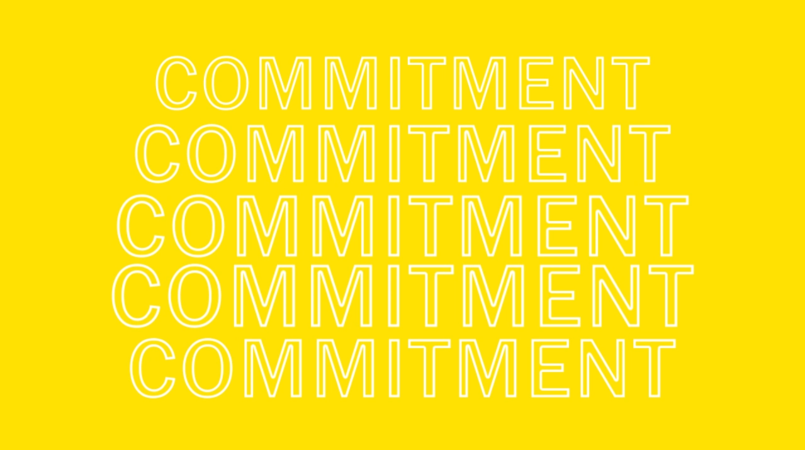
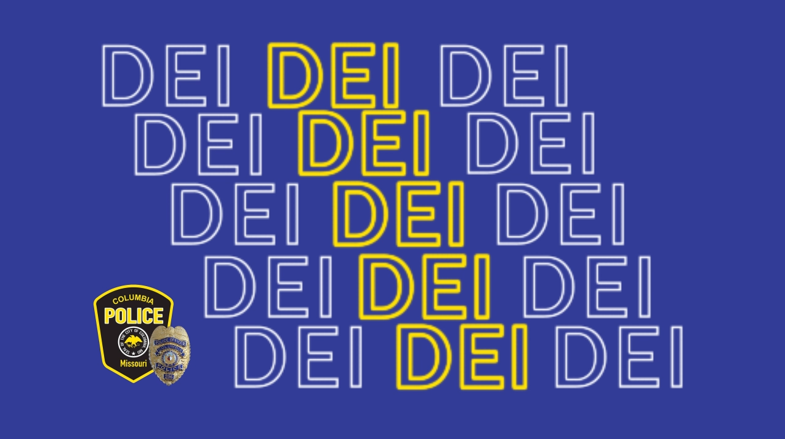
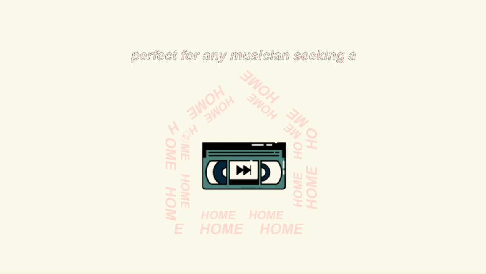
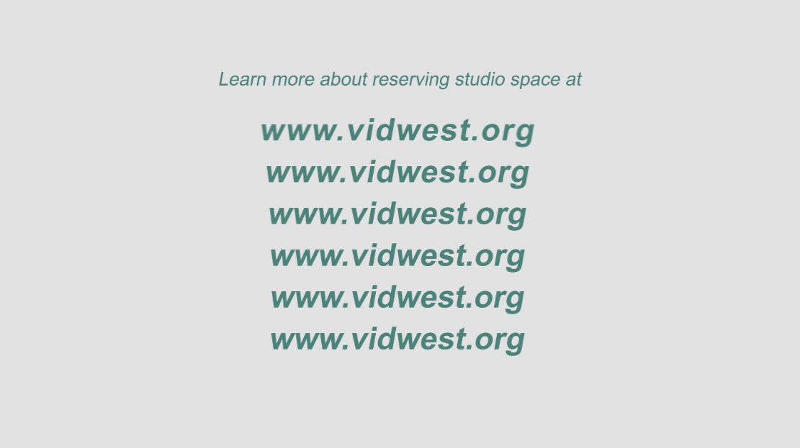

The first project is a project that I was a part of with two others in the summer of 2022. This project was completed as a capstone project and was completed in Dublin, Ireland. The goal of this project was to capture objects with significant meaning to the Irish people using photogrammetry to allow people who may not be located in Ireland to be able to still experience and learn about these different objects. Since there are so many different things that are important to the Irish we decided while we were there we wanted to focus on Irish mythology and folktales.
I believe the work that every member in the group contributed led to us having an incredible project we were all happy and proud of. I ended up learning a lot about the different aspects of photogrammetry, the software blender, and a little bit about Unity and developing a 3D environment. We were successfully able to capture a bit of Irish culture through their folktales. This resulted in us being able to share what we had learned with others who were able to view our project. Viewers were able to see the different models we had created from different objects that were important to different Irish folklore.


This second project is one that I did for the Columbia Police Department. The Columbia Police Department was wanting a short informative video for all possible audiences making a commitment to the community to exemplify the qualities of diversity, equity, and inclusion. They also wanted to explain to outsiders what they were doing in order to exemplify those qualities, including auditing policy that may have bias and undergoing regular and frequent bias training. I ended up using Kinetic Typography and some other different animation techniques to create this video. This project was created in Adobe Photoshop and Adobe After Effects.
I am proud of how this project ended up turning out. I believe I was able to perfectly capture what the Columbia Police Department was wanting. I was able to time the animations throughout this ad to match with a script they wanted me to create. I used the animated text to draw a viewer's attention as a way to emphasize the parts of the script that were important. I was also able to animate the text to appear in a satisfying and attention keeping way. I believe that this ended up looking professional and it helped the client portray what they were hoping for.
 This project was one that I created on the behalf of Vidwest Studios. This is a short advertisement in order to bring awareness to their company and the different things that their company did. Vidwest Studios was wanting to highlight their studio space that they offer for people to reserve as well as the equipment Vidwest Studio owned and rented out. I was given a script and some different video concepts that Vidwest Studios wanted me to include in the advertisement itself. I also was able to use their logo and different projects they had used in the past to create the advertisement in a style personalized to their company.
This project ended up being exactly what Vidwest Studios was looking for. I was able to do some research and learn new techniques in After Effects to make sure that I was able to do everything that I could to deliver a project that would be exactly what they were wanting. I was able to do everything that Vidwest studios was hoping for and I was able to take the ideas they had written out and create what they had been picturing. I took a lot of time planning how I wanted this project to turn out and I think in the end it helped me to create a product everyone was happy with.
 So far in my journey into the technology field, I have learned a lot and I have many things to reflect on already. I have been a part of several different projects at this point in time and each one has taught me something new. I have always been a visual and kinesthetic learner and accomplishing these projects allowed me to truly ingrain the multiple things I had learned. At this point I have mainly participated in digital media projects and I honestly have really enjoyed these types of projects.